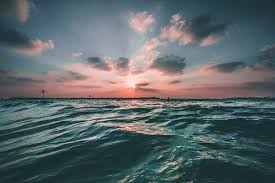
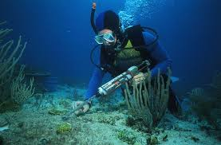

What is Marine Biology?
The study of marine biology includes a wide variety of disciplines such as astronomy,
biological oceanography, cellular biology, chemistry, ecology, geology, meteorology, molecular biology,
physical oceanography and zoology and the new science of marine conservation biology draws on many
longstanding scientific disciplines such as marine ecology, biogeography, zoology, botany, genetics,
fisheries biology, anthropology, economics and law.
Marine biology is the study of marine organisms, their behaviors and their interactions with the environment.
Because there are so many topics one could study within the field, many researchers select a particular interest
and specialize in it. Specializations can be based on a particular species, organism, behavior, technique or
ecosystem. For example, marine biologists may choose to study a single species of clams, or all clams that are
native to a climate or region.
Marine biology is the study of marine organisms, their behaviors and interactions with the environment.
Marine biologists study biological oceanography and the associated fields of chemical, physical, and
geological oceanography to understand marine organisms. Marine biology is a very broad area, so most
researchers select a particular area of interest and specialize in it. Specializations can be based
on a particular species, group, behavior, technique, or ecosystem.Molecular biology is a related area
of specialization in marine biology. Researchers apply molecular techniques to many environments
ranging from coastal marshes to the deep sea and to various organisms such as viruses, plants, and fish.


What is a Marine Biologist?
This is a harder question to answer than you may imagine! Marine biology is the field of
knowledge relating to marine organisms. But what is a marine biologist? To many, it means
being a dolphin trainer but to others it means managing a marine wildlife sanctuary. There
are many answers to this question and I would say that a marine biologist is someone who
works in some way in studying, observing, protecting, or managing marine organisms, be they
microbe, plant or animal. If you study marine fish populations you are a marine biologist.
If you manage a marine wildlife preserve and are concerned with protection of marine organisms
there, then you too are a marine biologist. You know you're a marine biologist if you have a
notebook or computer that you record information often about marine organisms. But you may also
be a marine biologist if you are collecting sponges, looking for bioactive drugs. You may be
counting them, doing DNA sequencing of them, observing them in the laboratory or making
theoretical models predicting their abundance once fishing is decreased. So marine biologists
do many things, but what they have in common is working with marine organisms.
Some researchers get involved in a range of activities. Alex Almario, a laboratory and
field operations technician profiled on this site, provides field support for scientists
conducting estuarine research. He reports that his many duties include: "boat operation
and maintenance; water quality data and sample collection; wetlands, mangrove, seagrass
and coral research; scuba surface support and diving; fieldwork; and wet lab ecotoxicology
support." Marine Biologist are really cool and if you're thinking about becoming one you
should do it because then you would be really cool.